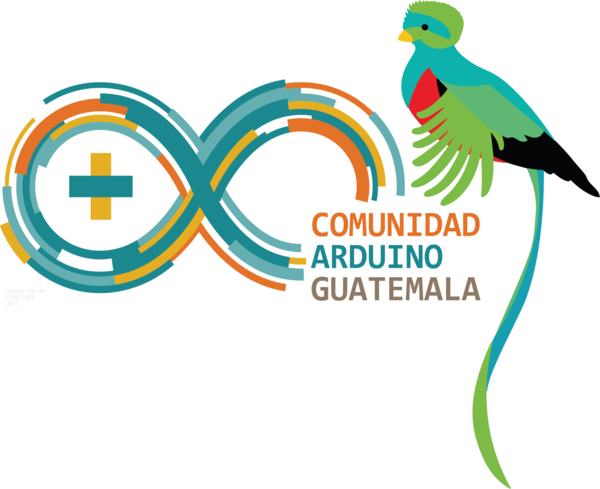
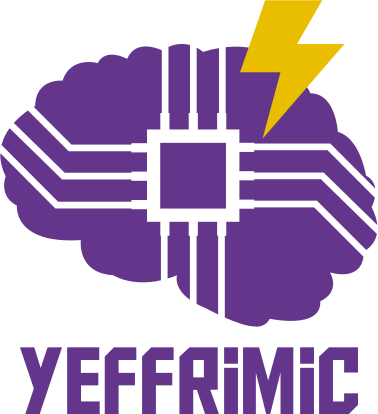
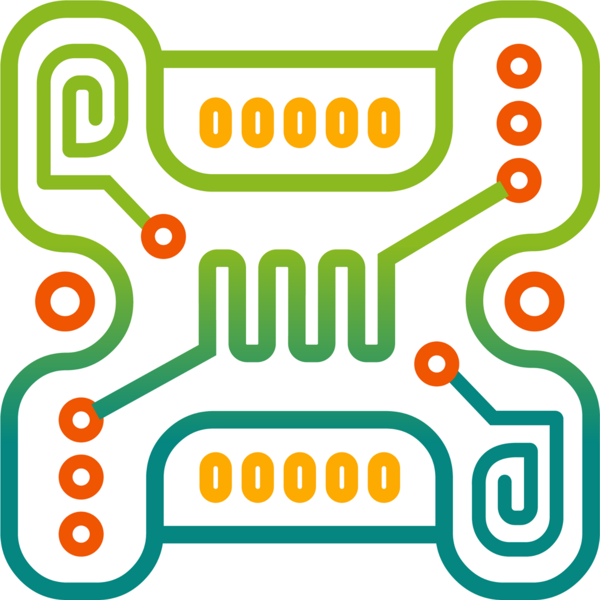
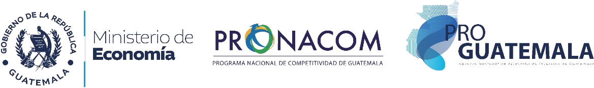

Un día para celebrar el hardware libre
El viernes 27 de noviembre celebramos en Antigua Guatemala el Arduino Day 2026, el encuentro mundial de la comunidad de hardware libre. Será un día de charlas, talleres y proyectos sobre electrónica, robótica, IoT y educación STEAM.
Es un espacio para estudiantes, docentes, profesionales y emprendedores que quieren aprender, compartir lo que construyen y conectar con el ecosistema tecnológico del país. Niños, jóvenes y profesionales: todos son bienvenidos.
¡Cupos llenos!
Ya no se admiten más charlas. Recibimos más propuestas de las que imaginamos. ¡Gracias, comunidad maker!
El registro de asistencia sigue abierto.
Registrarme como asistenteAgenda
Charlas de 30 minutos, con preguntas incluidas. Todo en un mismo salón.
Porta Hotel Antigua
Antigua Guatemala, Sacatepéquez.
Registro desde las 10:00 a. m.; cierre a las 3:30 p. m. (hora de Guatemala). Hay refacción a la 1:15 p. m.; no hay almuerzo, así que planificá tu comida.
Preguntas frecuentes
¿Cuánto cuesta?
Es gratis, con cupo limitado.
¿Dónde y cuándo?
En Porta Hotel Antigua, el viernes 27 de noviembre de 2026, de 10:00 a. m. a 3:30 p. m.
¿Cómo me registro?
¿Puedo dar una charla?
No, la convocatoria está cerrada por cupos llenos. ¡Te esperamos en la próxima edición!
¿Hay comida?
Hay una refacción a la 1:15 p. m.; no hay almuerzo.
¿Para quién es?
Para niños, jóvenes y profesionales: estudiantes, docentes, emprendedores y makers. No necesitás saber de electrónica para venir.
Organizan
Organizan


Coorganizan

Xibalba HackerspaceCon el apoyo de
